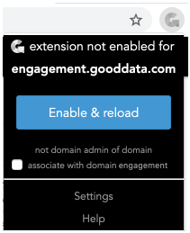
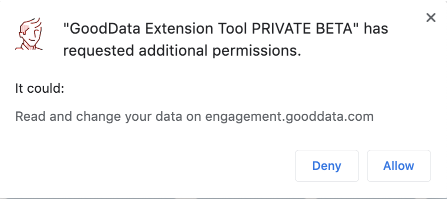

GoodData Extension now requires less permissions in Chrome - it now only has full access to sites you specifically enable it for.
Adding site/hostname is now much easier than before. Just click on the (inactive) extension icon on a site for which it is not enabled and a popup will appear. There you can enable the extension for that hostname. A Chrome popup will ask you for permission and if you confirm it, next time you visit this hostname, it the extension will be active there.
 
If for whatever reason the popup would not show, please try to close the tab and try again or add the hostname manually in the options.
The Extension contains several components:
(*)These functions require user to be an Administrator of a project.
"I already know the extension, just show me what's new..."
To show The Toolbar click on the 'G' icon in the browser address bar. This icon is displayed on gooddata sites (and whitelabeled GoodData sites when configured in the options (see below).
The Overlay appears when you click on ℹ icon in The Toolbar.
All the fuzzy dates and times are converted from original timezone in the API to your local timezone
You can hold the mouse over any of the fuzzy dates to show exact date and timi as it was returned by the API
You can click on the project timezone to go to /gdc/md/PID/service/timezone where the timezone can be changed as described in Setting a custom time zone for your project
| [Project Name] [Project Summary] | X | |
| Created | [fuzzy date of project creation] | |
| Updated | [fuzzy date of project update] | |
| DB driver | [database of the project Pg or Vertica] | |
| Timezone | [project timezone] | |
| Last data load | [fuzzy date of last upload to any dataset] | |
| Last sched. ETL | [fuzzy date of last executed scheduled ETL process + its status + link to log file(*)] | |
| Next sched. ETL | [fuzzy date of next scheduled ETL process + number of enabled / total schedules(*)] | |
| Auth. Token | [project authentication token(*)] | |
The Log Parser appears when a CloudConenct or Ruby Log is detected.
It allows you to clearly see where are errors an warnings and hide some information that is not so important and can clutter the log (request ID, path to executed ruby script).
In case of error it automatically scrolls to first line with error. Otherwise it scrolls to last logged line so far.
You can manually refresh the log with the Refresh link (it will keep your display settings).
By default the CloudConnect WatchDog process information (regular information each few seconds about what is running) is hidden. You can display it by clicking on the checkbox marked Watchdog.
By default the request_id part (present on each line) is hidden to make the log easier to read. To display the request_id (useful when debuging with GoodData Support) click the RequestID link.
You can click on the graph name to open this process within Data Integration Console
When the graph is still running, you can check the box next to Reload link to automatically refresh it every 2 minutes. If it then finishes and the window is not focused, you will be informed by desktop notification about success or error.
You can disable parsing of the log files in extension options (in case it is too slow on your computer or you just want to see the raw logs).
The extension tries to detect GoodData Dataset Wrtiters that have been already successfully finished in the log and displays total number of rows and data volume loaded to GoodData. Click on this information to open details about each dataset writer detected. In standard load mode, you will also see how long did the load part take for each dataset. In Batch SLI mode, you will see total duration of the load of whole batch next to the last dataset. Batch SLI mode is marked with time displayed in green color.
For each dataset Writer you can see the dataset identifier (put mouse over it to see the CloudConnect component ID), number of rows, data volume in MBs and relative ratio of these metrics to the other dataset loaded so far. This allows you to easily detect the largest datasets
Red bar is for rows, green bar for volume (put mouse over it to see exact percentages).
The extension tries to detect CloudConnect Phases that have been already finished or are running. It distinguishes phases in the main graph and any sub-graph. Click on this information to open details about phases and display a timeline. Number after the underscore identifies the phase. Number before underscore defines a graph execution. 0 is allways the main graph. Further levels (subgraph within subgraph) are partially supported - you acn tell which phases are from the same graph, but you cannot tell the level of nesting. Green lines are for sucessfully finished phases, gray for currently running, red for failed. The length of the bar is relative to the other phases duration. Move your mouse to this area to expand it if the information does not fit in.
The extension also tries to detect GoodData Dataset Wrtiters that have been already successfully finished in the log and displays total number of rows and data volume loaded to GoodData. Click on this information to open details about each dataset writer detected. Move your mouse to this area to expand it if the information does not fit in.
When using with Automated Data Distribution log, the Extension detects all datasets into which the process will write. For each of the datasets the Extension displays an icon based on whether the dataset is partitioned by client_id (id) or whether all the data will be loaded (all). The second icon identifies if the particular dataset is loaded in full mode (F) or incrementally (I). In case the dataset is mentioned in the log but not loaded, there is instead following icon (N/A). For each of the loaded datasets there a number of rows displayed and time of extraction of these rows from ADS.
When using with logs from the Ruby Bricks, the extension formats the lines to distinguish error levels and also hides some non-significant information () to improve the log readability.
There is a special mode for SQL Executor brick. In case of SQL Executor, the Extension displays how long each script took to execute. The script runs are also displayed on a timeline so you can easily see which scripts run in parallel. For iterations in SQL Executor (.isql files), each iteration is now displayed separately with an appropriate key.
If you select any text on a page, ypou can right click and use "Lookup Selection in Gooddata" command
It will take the current selection and perform lookup of it in GoodData metadata and if found displays the information in a overlay.
Supported are: object URIs (/gdc/md/PID/obj/OBJID), element IDs (/gdc/md/PID/obj/OBJID?id=elementid), and identifiers.
You can change the default GoodData Extension icon in the extension options.
You can set alternate icons for different projects or hostnames.
To enable the extension od hostnames other than secure.gooddata.com (i.e. whitelabeled) add the hostname to "whitelabeled hostnames" section. You can add hostnames manually here if you can do not want or can not use the popup for adding current hostname.
You can associate a GoodData domain to hostname to allow working with domain name in the magic buttons. If you do that, you will be able to use ${DOMAIN} placeholder in magic buttons. Note that domain-level APIs are typically only accessible to domain admin.
You can add up to five custom "magic" buttons. You can use GoodData resource or any other outside URL and to which you can pass the PID. You can use following placeholders: ${SERVER} - current hostname, ${PID} - current project ID, ${OBJ} - current object ID. Example: https://${SERVER}/gdc/md/${PID}/validate.
If you've previously associated a GoodData domain to a hostname, you can also use ${DOMAIN} placeholder. Note that domain-level APIs are only accessible to domain admin in GoodData.
You can also target any specific GoodData Labs application from your "magic" button. To link it with context of current project, use URL like this: https://${SERVER}/labs/apps/app_link?pid=${PID}&app=APP_NAME where APP_NAME is the name of the Labs App (it is part of its URL i.e. "clone_project").
The extension toolbar total width is limited to 800px and if needed it will make some of the standard link titles shorter to fit your custom buttons. If they would still not fit, it will shorten the longest titles of your magic buttons.
You can transfer your settings manually (i.e. between beta and regular extension or between different computers). To export, just copy the settings from the text area. To import, paste the JSON to the text area and hit Import button.
v0.9102:
v0.9018:
v0.9017:
v0.9016:
v0.9013:
v0.9011:
v0.9010:
v0.9007:
v0.9002:
v0.7505:
v0.7500: